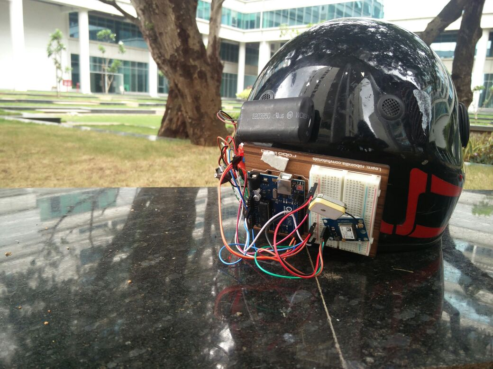

Category: Innovation Project
The Smart Helmet project is a safety-focused innovation designed to provide real-time accident detection and emergency alerts. It uses an Arduino Uno microcontroller, GSM module, GPS sensor, and accelerometer to detect crashes and immediately send SMS alerts with live coordinates to emergency contacts.
The system includes a lithium-ion battery, solar charging setup with relay control, and cloud-based monitoring for long-distance tracking. This helmet is ideal for bikers and industrial workers who need safety monitoring on the move.